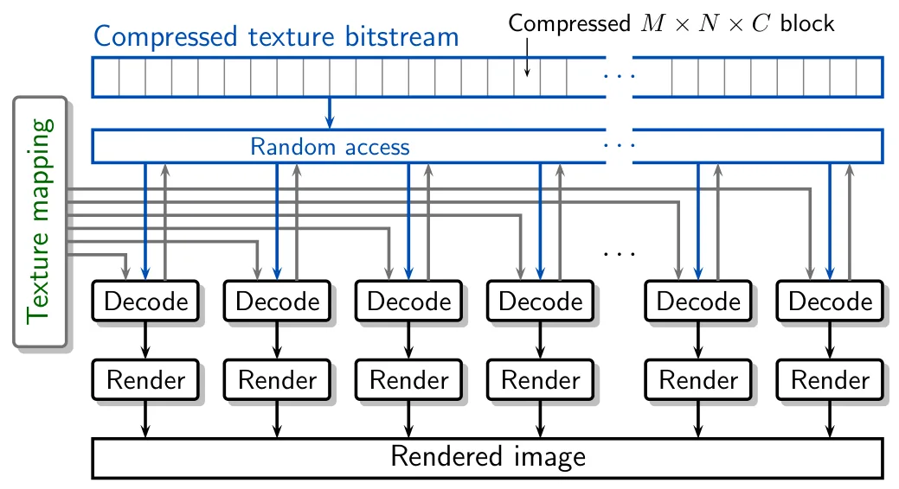
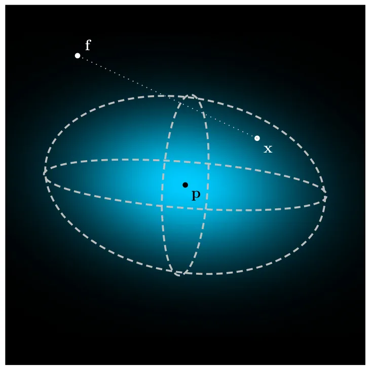
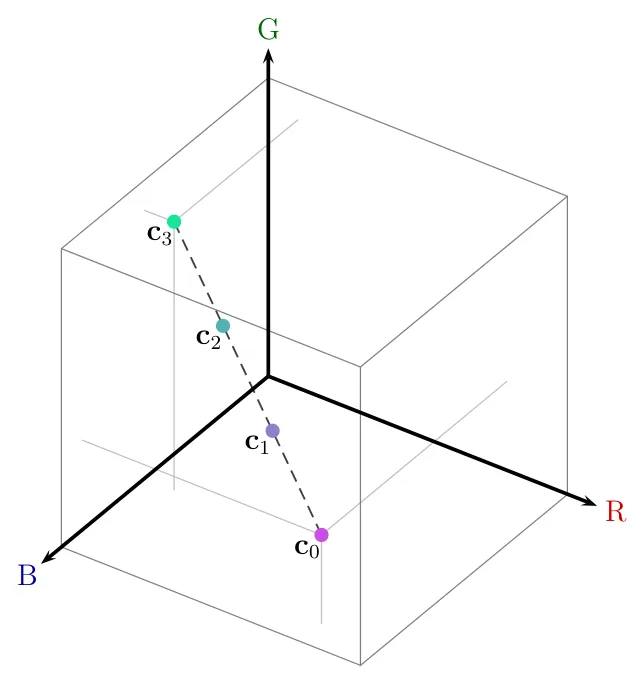
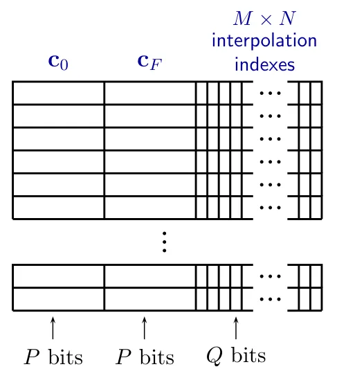
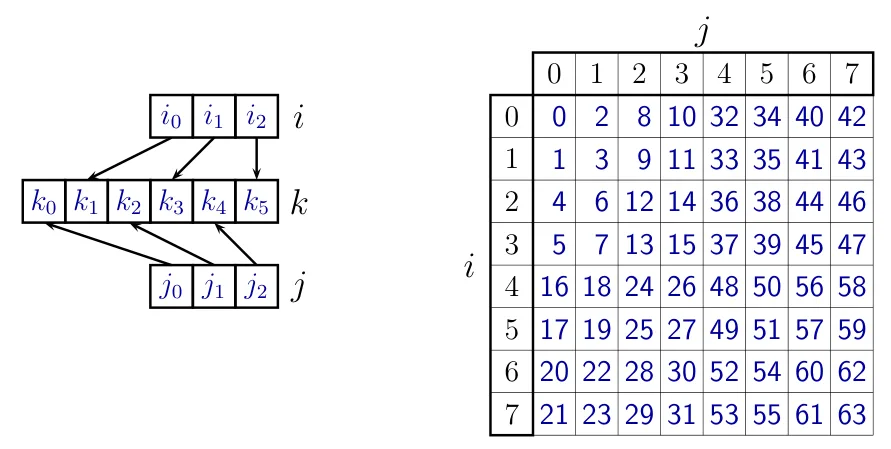
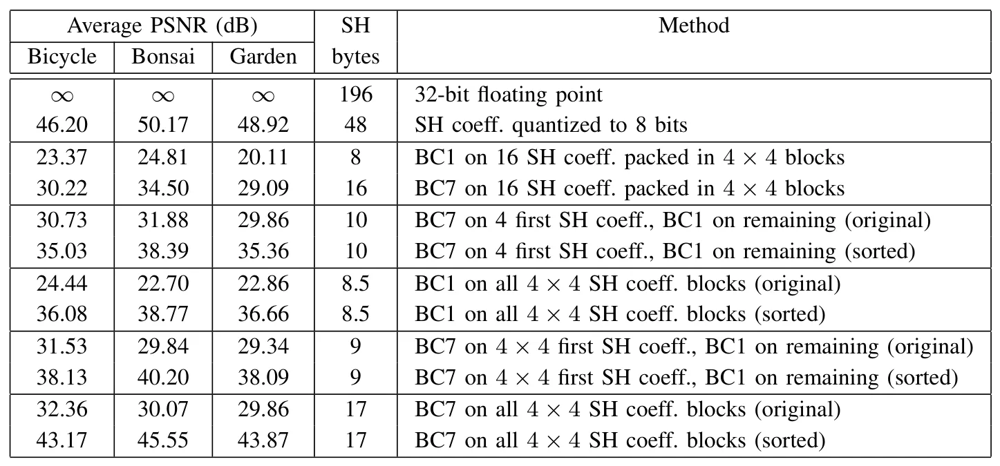

面向 GPU 的图形纹理编码压缩 3D Gaussian Splatting 数据Compression of 3D Gaussian Splatting Data Using GPU-friendly Graphics Texture Coding
对大规模 3DGS 地图的存储、随机访问和实时显示有直接工程价值；摘要缺少总压缩比与速度数值，在线增量更新能力待验证。
一句话工作总结
通过颜色局部分组、基元重排和 BC1/BC7 硬件纹理解码压缩球谐系数，同时保留随机访问与并行渲染。
摘要
3D Gaussian Splatting 使用大量球谐系数描述视角相关颜色，带来较高内存占用。本文使用现代 GPU 原生支持、可硬件加速并行解码的纹理压缩格式压缩球谐颜色系数。方法根据颜色对 Gaussian 基元进行局部分组与重排，使 BC1、BC7 等格式比直接压缩二维纹理更有效；同时引入保留随机访问的码率控制策略，以支持大规模并行解码而不牺牲渲染性能。实验显示，GPU 解压可在视觉质量仅有轻微或不可察觉退化的情况下完成。
Techniques for modeling 3D scenes from image collections, such as 3D Gaussian Splatting (3DGS), are capable of generating high-quality novel views by leveraging graphics primitives with view-dependent appearance. In 3DGS, spherical harmonic (SH) are employed to model view-dependent color, resulting in a large number of SH coefficients per primitive and large memory requirements. While compression approaches have been proposed to mitigate this problem, they do not exploit the capabilities of modern Graphics Processing Units (GPUs) for parallel decoding and rendering. In this paper, we propose a method for compressing SH color coefficients using texture compression schemes specifically designed for efficient parallel GPU decoding and supported by dedicated hardware acceleration. It is shown that those methods can compress color coefficients more effectively than 2D textures by exploiting the fact that primitives can be locally grouped and reordered according to color. Furthermore, we introduce a bit-rate control strategy that preserves random access, enabling large-scale parallelization without compromising rendering performance. Experimental results using BC1 and BC7 texture compression formats show that GPU-based decompression can be achieved with negligible or imperceptible degradation in the visual quality of rendered 3DGS scenes.
中文解读摘录
图表/页面预览

{kind=link}

{kind=link}

{kind=link}

{kind=link}

{kind=link}

{kind=link}
